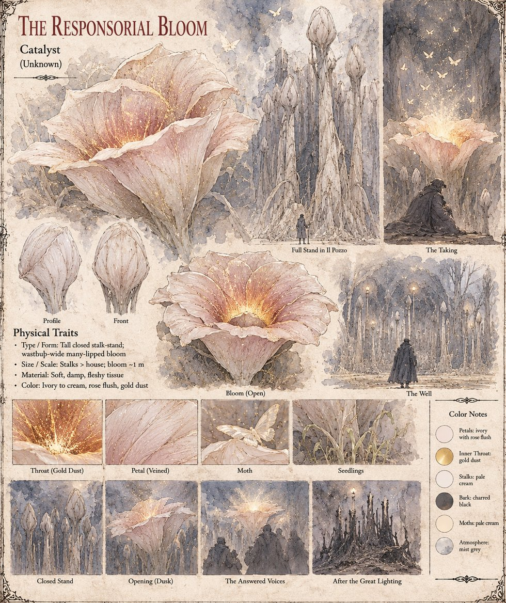

The Responsorial Bloom
Catalyst of Case 0333 · an anomalous flora native to the Val Muta hollow · the Choir Beyond the Last Lamp, the Counterfeit Lamp, the Pale Throat · no age given
A stand of pale stalks as thick as a man’s thigh and taller than a house rises from the floor of a round pit of black stone some sixty paces across, which the drovers called Il Pozzo and the Order’s surveyors entered as the Well, a short walk past the sexton’s fence. The settlers are told it is very probably a species of giant lily. The Custodian’s note calls it the Responsorial Bloom, older than the posting by a margin the archive records only as ancestral, built to do something to whoever comes near it. In the first summer the stalks put on a hand’s breadth a week, and a runner-root pegged by the sexton feeds across the turf toward the Far Lamp: four paces of the twenty-two at the first note, the last of them on the afternoon the flower opens. A little after the tenth hour it opens at Ilario’s feet, a pale, fleshy, many-lipped flower no larger than a washtub, warm as a hearth-stone; the moths rise off the lamp and settle on its rim, the lips fold in, and it takes thirty-one seconds. The next night, at the Kindling, it sings him back.
Every taking is followed by a replay on the night after, at full amplitude, in the dead person’s own voice: Ilario’s scream, Tonin’s Oh — it is warm, Menego’s Marisa? I have come. The Custodian logs the replay as a lure for the pollinator and, as not designed, as a lure for the victims’ kin; The designers did not model kin. The Listeners who sit at the fence call it the Choir Beyond the Last Lamp and the Answering; the Order’s clerks call it the Counterfeit Lamp, the Unlit Weed, the Pale Throat; Neither party would have been in the least helped by learning that it was a plant. Agata counts its tiers from Lamp Thirty-Eight (eighty-nine, fifty-five, thirty-four, twenty-one, thirteen), and the log leaves that signature in place so that any subject rigorous enough may find it. Seventy are taken in all, thirty-seven of them kin drawn by a replay and nine of them soldiers of a mountain picket, recorded by their own command as deserters.
The Great Lighting burns it for eleven hours. The Legate has four hundred barrels of blessed oil rolled to the rim; in the third hour the pods burst and a fine gray seed rises on the updraft, and the sexton enters Specimen burned. Specimen viable. The foreigner Higaide had tried to tell the Legate, through the parish clerk, that fire would only wake it; the Legate thanked him for his interest. On the eleventh of Deyren the first seedling comes up at the foot of Lamp Seven, and by mid-Eldren one stands at each of the hundred and six lamps; in the Weeding eight of the weeders are taken. After the Interdict the seedlings hold at knife-height for the month the Order’s blessed oil lasts and fail when it burns out. When a pale hermit walks down from Monte Cieco it closes on his hand for the better part of a minute and finds nothing to take hold of; it was built to answer desire, and he has none unanswered. I think it found me dull, he says. The river gives shrimp again as the parish takes less, and the log leaves the specimen in place and contracted.
The manuscript gives the stalks, the bloom no larger than a washtub opening from the outside in, the gold dust on the inner tiers, the moths, the pods, the seedlings and the charred stalks. The sheet’s ivory-to-cream petals with a rose flush, soft damp fleshy tissue, veined petal and pale cream stalks are its own, as are its views The Taking, The Well, The Answered Voices, Closed Stand, Opening (Dusk) and After the Great Lighting and its detail tiles Throat (Gold Dust), Petal (Veined), Moth and Seedlings. Its size line gives the bloom as about 1 m, which the manuscript does not; its type line is garbled on the sheet (it reads as waist-wide or similar); and it prints its age as (Unknown), where the manuscript gives none.
“a pale, fleshy, many-lipped flower no larger than a washtub”
Appears In

Related Subjects


Related Records

In the spring of the war’s third year, at dusk on the western rim of the hollow, the hermit lets the lips of the flower open for him, as they had for the boy at the Far Lamp, and fold round his hand. It finds nothing to take a purchase on; he draws his full-tang knife, lays the flat of it once against the nearest closed lobe, and it lets him go. A hundred and forty paces off, Higaide is on his feet.